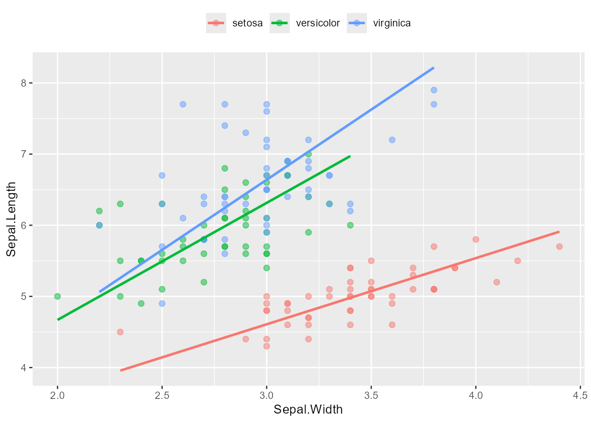
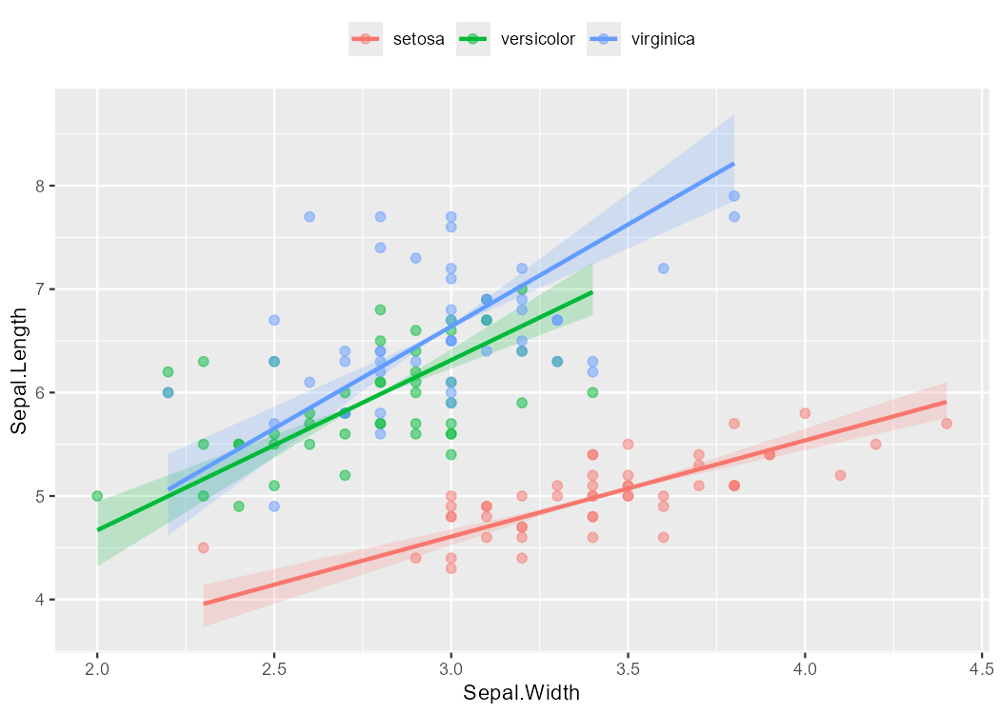

ggsmatr
ggplot2-based plots for (standardised) major axis estimation.
Overview
ggsmatr brings together standardised major axis (SMA) regression from the
smatr package and the visualisation interface of ggplot2. With a few
lines of code, you can generate grouped scatter plots with fitted SMA lines and optional
parametric confidence ribbons, useful for exploratory analysis and scientific publications.
Installation
Install the required dependencies, then install ggsmatr from GitHub:
install.packages(c("ggplot2", "smatr"))
# install.packages("devtools")
devtools::install_github("mariosandovalmx/ggsmatr")Quick start
The example below uses the classic Iris dataset shipped with the package.
1. Load the data
datafile <- system.file("iris.csv", package = "ggsmatr")
df.iris <- read.csv(datafile, encoding = "UTF-8")2. Fit the SMA model
The confidence level of the ribbon is the one used in sma(), for example
alpha = 0.05 for 95% intervals.
library(ggsmatr)
library(ggplot2)
library(smatr)
fit <- sma(
Sepal.Length ~ Sepal.Width + Species,
data = df.iris,
shift = TRUE,
elev.test = TRUE,
alpha = 0.05
)3. Build the plot
ggsmatr(
data = df.iris,
groups = "Species",
xvar = "Sepal.Width",
yvar = "Sepal.Length",
sma.fit = fit
) +
theme(
legend.position = "top",
legend.title = element_blank()
) +
ylab("Sepal.Length") +
xlab("Sepal.Width")
4. Add a parametric confidence ribbon
SMA is not OLS, so geom_smooth(se = TRUE) is not related with the intervals stored
in the smatr fit. Set ci = TRUE to draw a slope-CI envelope pivoted at
each group centroid:
ggsmatr(
data = df.iris,
groups = "Species",
xvar = "Sepal.Width",
yvar = "Sepal.Length",
sma.fit = fit,
ci = TRUE
) +
theme(
legend.position = "top",
legend.title = element_blank()
) +
ylab("Sepal.Length") +
xlab("Sepal.Width")
The ribbon maps the slope interval from sma.fit$groupsummary
(Slope_lowCI, Slope_highCI) to a family of lines through the group
mean. It is not an intercept band, a bootstrap prediction interval, or a pointwise CI for
E[Y | X] as in ordinary least squares. Transparency and resolution
can be tuned with ci.alpha and n.
Features
- Seamless integration with
ggplot2— chain any layer or theme. - SMA regression lines drawn automatically from a
smatr::sma()fit. - Parametric confidence ribbons for the SMA slope, pivoted at each group centroid.
- Group-aware colour mappings across points, lines, and ribbons.
Citation
If you use ggsmatr in your work, please cite the software. The preferred citation is
the Zenodo DOI:
citation("ggsmatr")Sandoval-Molina, M. A. (2026). ggsmatr: ggplot2 based plots for (standardised) major axis estimation (R package version 0.2.0). https://doi.org/10.5281/zenodo.22737761
Released under the MIT License. Source code is available on GitHub.
References
- Warton, D. I., Wright, I. J., Falster, D. S. and Westoby, M. (2006). Bivariate line-fitting methods for allometry. Biological Reviews 81, 259–291.
- Warton, D. I., Duursma, R. A., Falster, D. S. and Taskinen, S. (2012). smatr 3 – an R package for estimation and inference about allometric lines. Methods in Ecology and Evolution 3, 257–259.